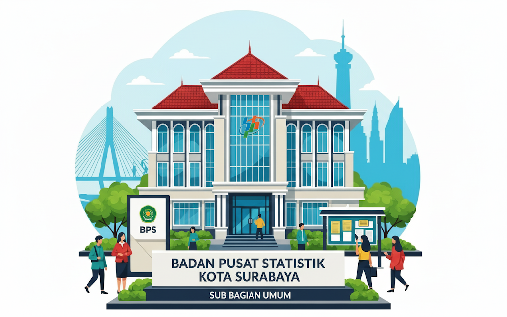

Tentang Subbag Umum
Sub Bagian Umum ditugaskan menyelenggarakan administrasi umum meliputi perencanaan, keuangan, kepegawaian, hubungan masyarakat, hukum & organisasi, arsip, persandian, barang milik negara, perlengkapan, dan rumah tangga.
